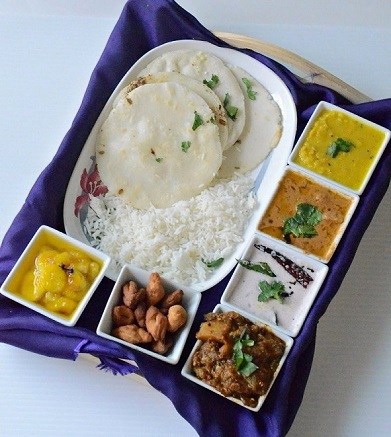
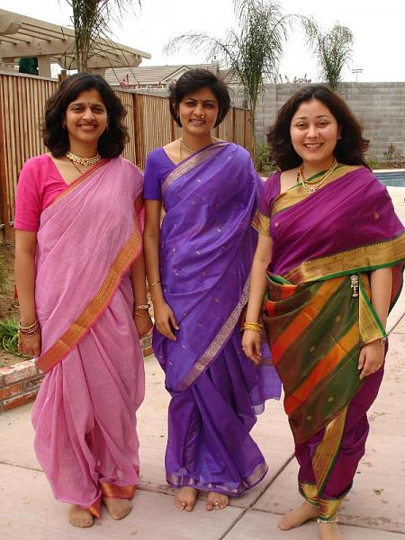
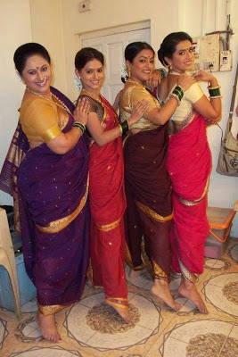
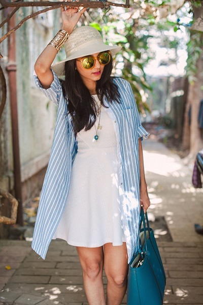
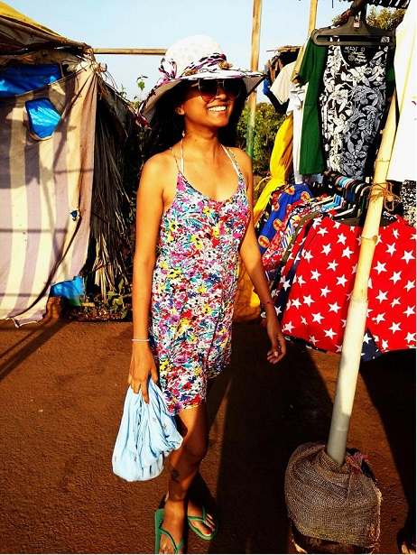
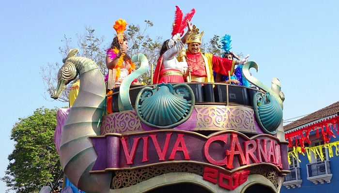
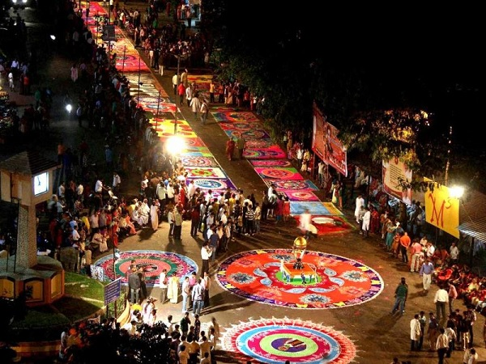
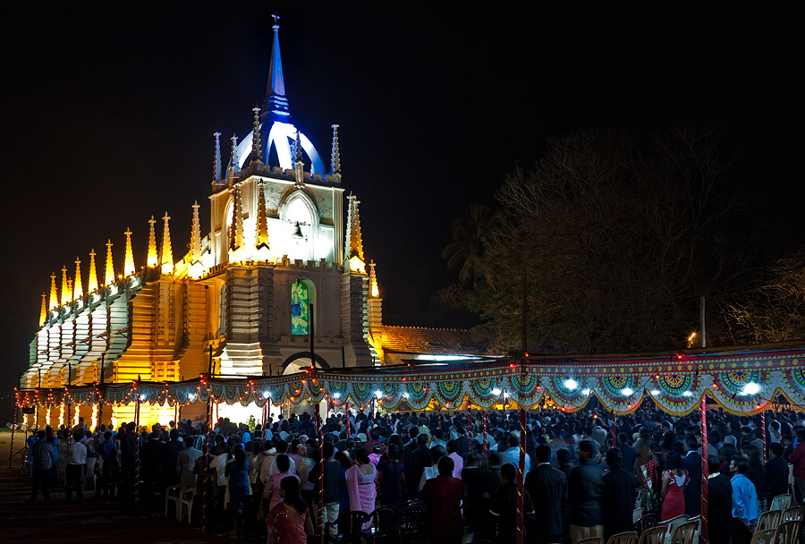

Goa
- Home
- Food

- Fashion
   
- Festival
- Christmas
- Diwali
- Carnival


Carnival
Carnival is an important festival that is celebrated during the month of February for four days. The festival is associated with the legendary king named as Momo who brought in peace, harmony, melody and color to different parts of Goa. During the festivities, people get involved in eating, drinking and enjoying to the fullest. All this happens after the 40 days of Lent. People wear amazing costumes.
Diwali
Diwali is also a significant festival of Goa. On this day, it is believed that lord Krishna killed the demon named as Narkasur ruling Goa, through his ‘sudarshan chakra’.Therefore, the festival is celebrated with the burning of the effigies of Narkasur that is mainly done at dawn. Hindus make it a point to light up their houses and to wear new clothes. - Carnival
Christmas
Christmas celebrates the birth of Jesus Christ. People make it a point to go and attend the mass at midnight. And after this, they decorate their homes with Christmas trees, cribs, stars as well as amazing lighting. People also eat sweets and give gifts to their family members and friends. - Diwali
- Christmas